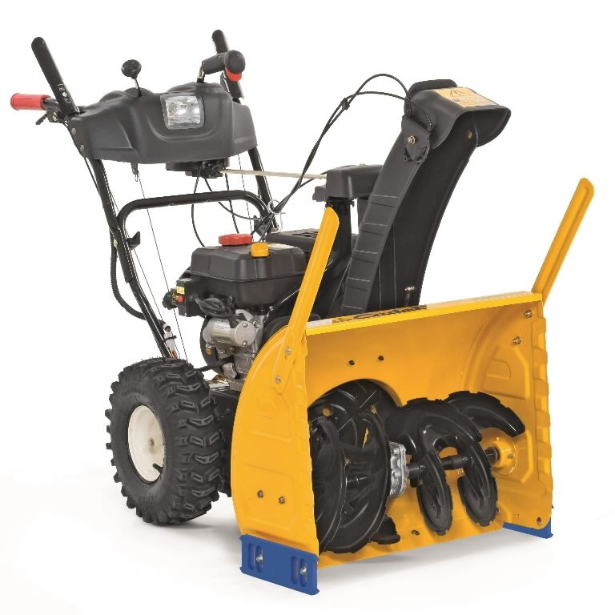

Benzininiai sniego valytuvai
2020.10.29 08:47
Pradžia Norų sąrašas (0) Paskyra Prekių krepšelis Užsakymas Prisijunkite Susikurkite pirkėjo paskyrą Apie mus Kontaktai Garantija Kaip užsakyti Terminai ir sąlygos Lizingas DOVANŲ KUPONAS Susisiekite su Mumis Grąžinimai Parduotuvės žemėlapis Gamintojai Dovanų čekiai Partneriai Akcijos Užsakymų istorija Naujienlaiškis Prekių krepšelis 0 0 Nėra užsakomų prekių! Paskambinkite Mums: +370-670-00108, info@mtools.lt Prisijunkite Susikurkite pirkėjo paskyrą Kategorijos AKCIJOS Bosch akcija Karcher akcija Metabo akcija Sodo ekspertai.lt pasiūlymai Apšvietimas Automobilių prekės Akumuliatorių pakrovėjai Akumuliatorių įkrovikliai Akumuliatorių įkrovikliai - užvedėjai Užvedėjai (Busteriai) Apkrovos matuokliai - testeriai Auto aksesuarai 12v Dygliai padangoms Grandinės ratams Kanistrai Kiti aksesuarai Ledo grandikliai Užvedimo laidai Vilkimo lynai Elektriniai įrankiai Akumuliatoriniai įrankiai Akumuliatorinės frezos Akumuliatorinės patikros kameros Akumuliatorinės skardos žirklės Akumuliatorinės viniakalės / kabiakalės Akumuliatoriniai daugiafunkciniai įrankiai Akumuliatoriniai diskiniai pjūklai Akumuliatoriniai fenai Akumuliatoriniai gręžtuvai-suktuvai Akumuliatoriniai juostiniai pjūklai Akumuliatoriniai kampiniai šlifuokliai Akumuliatoriniai maišytuvai Akumuliatoriniai obliai Akumuliatoriniai perforatoriai Akumuliatoriniai pjūklai metalui Akumuliatoriniai poliruokliai Akumuliatoriniai prožektoriai Akumuliatoriniai siaurapjūkliai Akumuliatoriniai skersavimo pjūklai Akumuliatoriniai šlifuokliai Akumuliatoriniai smūginiai gręžtuvai/suktuvai Akumuliatoriniai smūginiai veržliasukiai Akumuliatoriniai suktuvai Akumuliatoriniai tiesiniai pjūklai Akumuliatoriniai tiesiniai šlifuokliai Akumuliatorinių įrankių rinkiniai Kiti akumuliatoriniai įrankiai Daugiafunkciniai įrankiai Dažų pulverizatoriai Dulkių nutraukimo įranga Ištraukiamieji ventiliatoriai Galandimo - šlifavimo staklės Gręžimo, tvirtinimo įrankiai Atskėlimo plaktukai SDS-max Deimantinio gręžimo mašinos Elektriniai kabamušiai Gręžimo staklės Gręžtuvai Kampiniai gręžtuvai Maišytuvai Metalo frezavimo staklės Perforatoriai SDS-max Perforatoriai SDS-plus Smūginiai gręžtuvai Smūginiai suktuvai Smūginiai veržliasūkiai Suktuvai Klijavimo, kaitinimo įrankiai Klijų pistoletai Klijų pistoletų priedai Techniniai fenai Kroviklis - radijas Medžio apdirbimo įrankiai - staklės Briaunų laminavimo staklės Frezeriai Leistuvinės obliavimo staklės Medienos tekinimo staklės Medžio frezavimo staklės Medžio obliavimo-reismusavimo staklės Medžio šlifavimo staklės Obliai Parketo šlifavimo staklės Pjovimo - frezavimo staklės Reismusavimo staklės Siaurapjūklinės staklės Universalios daugiafunkcinės staklės Pjovimo įrankiai Betono / akmens pjovikliai Diskiniai medžio pjūklai Diskiniai metalo pjūklai Formatinės pjovimo staklės Juostiniai pjūklai Metalo kirpimo įrankiai Mūro frezos Plytelių pjovimo staklės Putoplasto pjūklai Siaurapjūkliai Skersinio pjovimo staklės Stacionarūs diskiniai pjūklai Tandeminiai pjūklai Universalūs pjūklai Šlifavimo/pjovimo/tekinimo įrankiai Betono/akmens šlifuokliai Būgniniai šlifuokliai Ekscentriniai šlifuokliai Glaisto šlifavimo mašinos Juostiniai šlifuokliai Kampiniai šlifuokliai (iki Ø125mm) Kampiniai šlifuokliai (iki Ø230mm) Metalo tekinimo staklės Poliruokliai Tiesiniai šlifuokliai Trikampiai šlifuokliai Vibraciniai šlifuokliai Generatoriai Benzininiai generatoriai Dyzeliniai generatoriai Suvirinimo generatoriai Gervės. Diržai. Elektrinės traukimo gervės Elektriniai pakelėjai su trosu Grandininės gervės Rankinės traukimo gervės Įrankių priedai Adapteriai/patronai Akumuliatoriai įrankiams Black+Decker Akumuliatoriai Bosch akumuliatoriai Dewalt akumuliatoriai Dremel akumuliatoriai Echo akumuliatoriai EGO Power+ akumuliatoriai Hitachi akumuliatoriai Ikra mogatec akumuliatoriai Makita akumuliatoriai Metabo akumuliatoriai Milwaukee akumuliatoriai Redback akumuliatoriai Ryobi akumuliatoriai Stiga akumuliatoriai Worx akumuliatoriai Akumuliatorių krovikliai Daugiafunkcinių įrankių priedai Diskai Akmens/betono pjovimo diskai Deimantiniai pjovimo diskai Deimantiniai šlifavimo diskai Diskiniai pjūklai Metalo pjovimo diskai Poliravimo/šlifavimo diskai Šlifavimo diskai DREMEL įrankių priedai Abrazyviniai antgaliai Aliuminio oksido šlifavimo akmenys Deimantiniai antgaliai Didelio našumo abrazyviniai šepečiai Dremel priedų komplektai Frezos (HSS) Graviravimo antgaliai Grąžtai stiklui Greitaeigiai pjaunamieji antgaliai Guminiai poliravimo antgaliai Impregnuoti poliravimo ritinėliai Koteliai Nerūdijančio plieno šepečiai Plieninės vielos šepečiai Poliravimo diskai Šerių šepečiai Silicio karbido šlifavimo akmenys Šlifavimo akmenys grandinei galąsti Suspaudžiamosios įvorės Universalūs griebtuvai Volframo karbido pjaunamieji antgaliai Žalvariniai šepečiai Dremel valdymo priedėliai Dulkių nusiurbimo sistemos Frezos Frezų komplektai medžiui Frezų komplektai metalui Grąžtai / kaltai Grąžtai Grąžtų / kaltų komplektai Kaltai Gręžimo karūnos Gręžimo karūnos betonui Gręžimo karūnos keramikai Gręžimo karūnų komplektai Gręžimo stovai Kreipiančiosios liniuotės Maišytuvai Obliavimo peiliai Pjovimo juostos Pjūkleliai tiesiniam pjūklui Prailgintuvai Siaurapjūkliai pjūkleliai Siaurapjūklių pjūklelių komplektai Stovai įrankiams Suktuvo antgaliai Antgaliai varžtams ir veržlėms Suktuvo antgalių komplektai Tepalai įrankiams Universalūs priedai Vieliniai šepečiai Vieliniai šepečiai kampiniams šlifuokliams Vinys / kabės Kopėčios Kopečios profilinės Laiptelinės kopėčios Teleskopinės kopėčios Laisvalaikio prekės Krepšiai Multirinkiniai ir peiliai Sport-Brella kėdės Sport-Brella skėčiai Matavimo įrankiai Betono kietumo matuokliai Daugiafunkciniai testeriai, multimetrai Drėgmės ir temperatūros matuokliai Garso lygio matuokliai Gulsčiukai Ieškikliai Imtuvai Lazeriniai atstumų matuokliai Lazeriniai rotaciniai nivelyrai Linijiniai lazeriai Matavimo įrankių priedai Laikikliai Liniuotės ir gairės Teleskopiniai stovai Trikojai stovai Mikrometrai Optiniai nivelyrai Posvyrių/kampų matuokliai Ratukinės atstumo matuoklės Slankmačiai Taškiniai lazeriai Temperatūros matuokliai ir kameros Oro sausintuvai Pneumatinė įranga Filtrai Kompresoriai betepaliniai Kompresoriai stūmokliniai Kompresorinė alyva Kompresorių cilindrai Oro kompresorių atsarginės dalys Pneumatiniai įrankiai Aerografai Gręžtuvai, suktuvai Kiti pneumatiniai įrankiai Pneumatinės skardos kirpimo žirklės Pneumatiniai - dujiniai vinių ir sąsagėlių kalimo prietaisai Pneumatiniai adatiniai kaltai Pneumatiniai daugiafunkciniai įrankiai Pneumatiniai kaltai Pneumatiniai kampiniai šlifuokliai Pneumatiniai kniedikliai Pneumatiniai pistoletai tepalui Pneumatiniai siaurapjūkliai Pneumatiniai šlifuokliai - poliruokliai Pneumatiniai stiklo pjovikliai Pneumatiniai tiesiniai šlifuokliai Pneumatiniai veržlesukiai 1 Pneumatiniai veržliasukiai 1/2 Pneumatiniai veržliasukiai 1/4 Pneumatiniai veržliasukiai 3/4 Pneumatiniai veržliasukiai 3/8 Pneumo terkšlės Pulverizatoriai Pneumo priedai Nupūtimo pistoletai Padangų pripūtimo pistoletai Pneumo rinkiniai Praplovimo pistoletai Žarnos kompresoriams Smėliapūtės Rankiniai įrankiai Atsuktuvai Atsuktuvų komplektai Darbastaliai Dėžės ir krepšiai Dinamometriniai raktai 1/2 Dinamometriniai raktai 1/4 Dinamometriniai raktai 3/4 Dinamometriniai raktai 3/8 Dinamometriniai raktai Galvučių ir įrankių komplektai Antgalių komplektai Galvučių ir įrankių komplektai 1 Galvučių ir įrankių komplektai 1/2 Galvučių ir įrankių komplektai 1/4 Galvučių ir įrankių komplektai 3/4 Galvučių ir įrankių komplektai 3/8 Galvučių sugadintiems varžtams rinkiniai Kombinuoti galvučių ir įrankių rinkiniai 1/4 , 3/8 , 1/2 Smūginių galvučių komplektai Galvutės Gultai, kėdutės Įrankiai įrankių spintelėms Įrankiai motociklams, motoroleriams Kabių pistoletai Kniedikliai Kryžminiai raktai L ir T tipo šešiakampiai L ir T tipo šešiakampių rinkiniai L-tipo rankenos galvutėms Magnetai / veidrodėliai Magnetinės juostelės/laikikliai įrankiams Medžio apdirbimo įrankiai Padidintos jėgos raktai/reduktoriai ratams Peiliai Pistoletai montavimo putoms - silikonui Prailgintojai 1/2 Prailgintojai 1/4 Prailgintojai 3/4 Prailgintojai 3/8 Prailgintojai Raktai E-TORX raktai Kombinuoti raktai Raktų komplektai Colinių raktų rinkiniai E Tipo raktų komplektai Kilpinių raktų rinkiniai Kombinuotų raktų rinkiniai Plokščių raktų rinkiniai Raktai stabdžių žarnelėms/vamzdeliams Raktų su terkšle rinkiniai S ir C formos raktų rinkiniai Rankiniai pjūklai Rankiniai medžio pjūklai Rankiniai pjūklai akytbetoniui Rankiniai pjūklai metalui Replės Reguliuojamos replės Replių komplektai Santechniniai raktai Skaičių ir raidžių iškalėjai Skylamušiai tarpinėms Smeigių, užlūžusių varžtų išsukėjai Spaustuvai. Priekalai Sriegikliai. Sriegpjovės Sriegiklių/Sriegpjovių rinkiniai Sriegio atnaujinimo įrankiai, indėklai sriegiams Tepalo filtrų atsukėjai Terkšlės 1'' Terkšlės 1/2 Terkšlės 1/4 Terkšlės 3/4 Terkšlės 3/8 Terkšlės Tvirtinimo elementai terasoms Valcavimo įrenginiai Vežimėliai įrankiams Įrankiai įrankių spintelėms Santechniniai įrankiai Plastiko suvirinimo iranga Sriegimo įrankiai Saugos priemonės Akių ir veido apsaugos priemonės Apsauginiai akiniai Apsauginiai skydeliai Ausų apsaugos įranga Batai Darbo kojinės Kelių apsaugos Kelnės Kepurės Liemenės Miškininko rūbai Pirštinės Šalmai Striukės Serviso įranga Ašiniai presai Detalių plovyklos Diagnostinė įranga, įrankiai Aušinimo sistemai Benzininiams varikliams Dyzeliniams varikliams Kiti testavimo, matavimo ir reguliavimo įrankiai, stroboskopai, endoskopai Stabdžių sistemai Domkratai Hidrauliniai domkratai Hidrauliniai domkratai su ratukais Mechaniniai domkratai / atramos Pneumatiniai domkratai Pneumo-hidrauliniai domkratai Hidraulinė įranga Hidraulinės pompos / hidraulinės stotelės Hidrauliniai cilindrai Hidrauliniai kranai Hidrauliniai presai Hidrauliniai, mechaniniai spyruoklių suspaudėjai Hidrauliniai keltuvai / stovai Įrankiai duslintuvui Įrankiai generatoriaus remontui Įrankiai ir įranga kėbulų lyginimui Įrankiai sankabai, greičių dėžei Įrankiai stabdžių nuorinimui Įrankiai stabdžių remontui Įrankiai vožtuvams, cilindrams, stūmokliams Kaitinimo ir kibirkštinių žvakių remonto įrankiai Keltuvai / stovai motociklams Kondicionierių pildymo įranga ir įrankiai remontui Nuėmikliai Pagalbiniai įrankiai Presavimo įrankiai Ratų balansavimas / montavimas Transmisijos domkratai, stendai ir balansyrai varikliams Ultragarsiniai valytuvai Vamzdžių lenktuvai Šildymo įranga Dujiniai infraraudonųjų spindulių šildytuvai Dujiniai keramikiniai šildytuvai Dujiniai tiesioginio degimo šildytuvai Dyzeliniai infraraudonųjų spindulių šildytuvai Dyzeliniai netiesioginio degimo šildytuvai Dyzeliniai tiesioginio degimo šildytuvai Elektriniai infraraudonųjų spindulių šildytuvai Elektriniai šildytuvai Šildytuvų priedai Stacionarūs dyzeliniai šildytuvai Universalaus kuro šildytuvai Sodas/Daržas Akumuliatoriai vejapjovėms (traktoriukams) Aukštapjovės Barstytuvai Diskinės malkų pjovimo staklės Galąstuvai grandinėms / diskams Genėjimo pjūklai Grandininiai pjūklai Akumuliatoriniai grandininiai pjūklai Benzininiai grandininiai pjūklai Elektriniai grandininiai pjūklai Grąžtai žemei Gyvatvorių žirklės Akumuliatorinės gyvatvorių žirklės Benzininės gyvatvorių žirklės Elektrinės gyvatvorių žirklės Karučiai Kirviai ir kiti miško įrankiai Kardai ir mačetės Kirviai Pagalbiniai miško įrankiai Komposto dėžės Kultivatoriai ir motoblokai Laistymo įranga Lapų pūtikai siurbliai Malkų skaldytuvai Multifunkciniai įrankiai sodui Purkštuvai Rankiniai sodo įrankiai Daržininko įrankiai Grėbliai Gyvatvorių žirklės Įrankiai sniego valymui Kastuvai Kiti rankiniai sodo įrankiai Pienių šaknų ravėtuvas Pjūkleliai ir peiliai Rankenos Šakės Sekatoriai Semtuvai Šepečiai ir šluotos Sodinės replės Sodo žirklės Universalūs sodo genėtuvai Žolės žirklės Šakų smulkintuvai Šienapjovės Sniego valytuvai Akumuliatoriniai sniego valytuvai Benzininiai sniego valytuvai Elektriniai sniego valytuvai Sodo įrangos priedai Akumuliatorinėms vejapjovėms Akumuliatoriniams sekatoriams Bakeliai kurui Elektrinėms žoliapjovėms Grandininiams pjūklams Gyvatvorių žirklėms Kultivatoriams ir motoblokams Lapų pūstuvams Mechaninėms žoliapjovėms Smulkintuvams Trimeriams Vejapjovėms-robotams Vejos purentuvams Vejos traktoriukų priedai Žolės ir krūmų žirklėms Tepalai sodo technikai Trimeriai Akumuliatoriniai trimeriai Benzininiai trimeriai Elektriniai trimeriai Universalios mašinos Vejapjovės Akumuliatorinės vejapjovės Benzininės vejapjovės Elektrinės vejapjovės Mechaninės vejapjovės Vejapjovės - robotai Vejos aeratoriai / purentuvai Vejos traktoriukai Žemės kaltai ŽEMĖS VOLAI Žolės ir krūmų žirklės Statybų įranga Benzininiai diskiniai pjūklai Betono maišyklės Elektrinės plytelių - trinkelių pjovimo staklės Giluminiai vibratoriai Grunto tankinimo įranga Metalo formavimo įrenginiai Iškertamosios žirklės Kombinuotos staklės Profesionali dažymo įranga Rankiniai plytelių ir stiklo pjovimo įrankiai Statybinės vaikštynės Suvirinimo įranga Apsauga nuo kibirkščių, pastos ir reagentai Degikliai bei Pjovikliai su deguonim Dujinės žarnos Kombinuoti suvirinimo aparatai Litavimo instrumentai Degikliai Dujos Lituokliai Priedai litavimui MMA suvirinimo aparatai Plazminiai pjovimo aparatai Pramoniniai degikliai Suvirinimo medžiagos Elektrodai Pridėtinė viela Suvirinimo vielos Suvirinimo pusautomačiai Suvirinimo reikmenys ir priedai Antgaliai, tūtos Degikliai Elektrodų laikikliai Magnetai suvirinimo kampams Masės laikikliai Reduktoriai Suvirinimo skydeliai TIG suvirinimo aparatai (AC/DC) TIG/MMA Suvirinimo aparatai Tepimo įrankiai. Pompos Kuro-tepalo pompos ir siurbliai Tepalo išdavimo-surinkimo talpos Tepalo presai. Tepalinės. Švirkštai Tepimo priemonės Brunox DAC DC-40 Dinitrol Lotos Piton Presto Rustyco Tectyl - Valvoline Tepalai sodo technikai U-POL Transportavimo įranga Transportavimo vežimėliai Ūkio prekės Grūdų malūnai Gyvūnų kirpimo mašinėlės Tinklai avims Valymo įranga Aukšto slėgio plovyklos AS Priedai Buitinės aukšto slėgio plovyklos Buitiniai benzininiai aukšto slėgio įrengimai Profesionalios aukšto slėgio plovyklos Profesionalūs benzininiai aukšto slėgio įrengimai Gariniai įrengimai Buitiniai gariniai įrengimai Buitiniai gariniai valymo įrenginiai - siurbliai Garinių įrengimų priedai Grindų poliravimo įrenginiai Langų plovimo įrengimai Lyginimo sistemos Siurbliai Akumuliatoriniai dulkių siurbliai Buitiniai dulkių siurbliai su vandens filtru Buitiniai plaunantys dulkiu siurbliai Buitiniai sauso siurbimo siurbliai Buitiniai sauso-šlapio siurbimo siurbliai Buitiniai siurbliai - robotai Dulkių siurblių priedai Profesionalūs plaunantys dulkiu siurbliai Profesionalūs sauso siurbimo dulkių siurbliai Profesionalūs sauso-šlapio siurbimo siurbliai Siurbliai pelenams Šlavimo įrenginiai Valymo cheminės priemonės Vandens siurbliai Elektriniai vandens siurbliai Hidroforai Sodo fontanai Vandens siurbliai su vidaus degimo varikliais Vidaus degimo varikliai Benzininiai varikliai Dyzeliniai varikliai Pradžia Norų sąrašas (0) Paskyra Prekių krepšelis Užsakymas
Pradžia Sodas/Daržas Sniego valytuvai Benzininiai sniego valytuvai
Benzininiai sniego valytuvai
Rikiuoti pagal: ----------- Pavadinimas A - Ž Pavadinimas Ž - A Kaina mažiausia didžiausia Kaina didžiausia mažiausia Kodas A - Ž Kodas Ž - A Rodyti: 24 25 50 75 100 Prekių palyginimas (0) Rodymas: Sąrašas Tinklelis Sniego pūstuvas Texas Snow King 565TG Sniego pūstuvas Texas Snow King 565TG Sniego valytuvas - pūstuvas su dvipakope sniego metimo sistema, patogiu valdymu, tvirta konstrukcija. Reguliuojama sniego metimo kryptis ir aukštis. Galingas, kompaktiškas ir patogus. Reguliuojamasis deflektorius Vertikalus numetimo krypt.. € 599,00 Į krepšelį Pridėti prie norų sąrašo Palyginti Sniego pūstuvas Texas Snow King 617TGE Sniego pūstuvas Texas Snow King 617TGE Sniego valytuvas - pūstuvas su dvipakope sniego metimo sistema, patogiu valdymu, tvirta konstrukcija. Reguliuojama sniego metimo kryptis ir aukštis. Galingas, kompaktiškas ir patogus. Reguliuojamasis deflektorius Vertikalus numetimo kryp.. € 789,00 Į krepšelį Pridėti prie norų sąrašo Palyginti Sniego valytuvas Cub Cadet XS3 66 SWE Sniego valytuvas Cub Cadet XS3 66 SWE Palyginti su tradiciniais dviejų pakopų sniego valytuvais, "Cub Cadet 3X" serija iki 50% greičiau nuvalo gilų sniegą ir leidžia be vargo, energingai ir patogiai pašalinti 45 cm storio sniego sluoksnį. 3X pjaustytuvas gali net pralaušti sniego pusnis, ku.. € 1.745,00 Į krepšelį Pridėti prie norų sąrašo Palyginti Sniego valytuvas Cub Cadet XS2 61 SWE Sniego valytuvas Cub Cadet XS2 61 SWE Variklis CubCacet OHV, 208cc Maks. galingumas 3,9kW/3600rpm Darbinis plotis 61 cm Įsiurbimo aukštis 53 cm Startas rankinis/elektrinis 230V Transmisija - ratai 15x5 Sraigtas 2 pakopų X-treme 30 cm Pavaros į priekį/atgal 6/2 Kuro bako talpa 2l Išmetimo.. € 1.239,00 Į krepšelį Pridėti prie norų sąrašo Palyginti Sniego valytuvas Cub Cadet XS3 76 SWE Sniego valytuvas Cub Cadet XS3 76 SWE Palyginti su tradiciniais dviejų pakopų sniego valytuvais, "Cub Cadet 3X" serija iki 50% greičiau nuvalo gilų sniegą ir leidžia be vargo, energingai ir patogiai pašalinti 45 cm storio sniego sluoksnį. 3X pjaustytuvas gali net pralaušti sniego pusnis, kurias v.. € 1.945,00 Į krepšelį Pridėti prie norų sąrašo Palyginti Sniego valytuvas Cub Cadet XS3 76 TDE Sniego valytuvas Cub Cadet XS3 76 TDE Palyginti su tradiciniais dviejų pakopų sniego valytuvais, "Cub Cadet 3X" serija iki 50% greičiau nuvalo gilų sniegą ir leidžia be vargo, energingai ir patogiai pašalinti 45 cm storio sniego sluoksnį. 3X pjaustytuvas gali net pralaušti sniego pusnis, kurias v.. € 2.345,00 Į krepšelį Pridėti prie norų sąrašo Palyginti Sniego valytuvas HECHT 9129 SQ Sniego valytuvas HECHT 9129 SQ Dviejų pakopų benzininis savaeigis sniego pūtikas, keturtaktis OHV variklis 11 AG galingumas, darbinis plotis 74 centimetrai, darbinis aukštis 55 centimetraI, maksimalus darbo našumas 2000 m3/h, 5 pavaros i priekį ir 2 atgal, metalinis korpusas, elektrinis 220V.. € 1.009,00 Į krepšelį Pridėti prie norų sąrašo Palyginti Sniego valytuvas HECHT 9130 TD Sniego valytuvas HECHT 9130 TD Dviejų pakopų benzininis savaeigis sniego pūtikas, keturtaktis OHV variklis 11 AG galingumas, darbinis plotis 76 centimetrai, darbinis aukštis 51 centimetras, maksimalus darbo našumas 1700 m3/h, 6 pavaros i priekį ir 2 atgal, metalinis korpusas, elekt.. € 1.019,00 Į krepšelį Pridėti prie norų sąrašo Palyginti Sniego valytuvas MTD M 53 + alyva Sniego valytuvas MTD M 53 + alyva Techniniai duomenys: Variklis MTD SnowThorX 35 OHV Maks. galingumas 2,2kW Darbinis plotis 53 cm Darbinis aukštis 28 cm Starteris rankinis Varomas sraigtu Ratai 7"x 1,7'' Kuro bako talpa 1,9 l Išmetimo deflektoriaus valdymas rankinis .. € 449,00 Į krepšelį Pridėti prie norų sąrašo Palyginti Sniego valytuvas MTD M 61 Sniego valytuvas MTD M 61 Techniniai duomenys: Variklis MTD SnowThorX 55, 179cc, OHV Maksimalus galingumas kW/3600rpm Darbinis plotis 61 cm Darbinis aukštis 53 cm Starteris rankinis (trosas) Transmisija ratai Sraigtas X-treme Pavaros į priekį/atgal 5 / 2 Ratai 13'' x 4'' Kuro bako tal.. € 835,00 Į krepšelį Pridėti prie norų sąrašo Palyginti Sniego valytuvas MTD Optima ME 66 Sniego valytuvas MTD Optima ME 66 Variklis MTD SnowThorX 80, 277cc, OHV Maksimalus galingumas 5 kW/3600rpm Darbinis plotis 66 cm Įsiurbimo aukštis 53 cm Starteris rankinis ir elektrinis Transmisija ratai Sraigtas X-treme Pavaros į priekį/atgal 5 / 2 Ratai 16'' x 4,8'' Kuro bako talpa 4,7.. € 1.140,00 Į krepšelį Pridėti prie norų sąrašo Palyginti Sniego valytuvas Wolf Garten AMBITION SF 66 TE Sniego valytuvas Wolf Garten AMBITION SF 66 TE Techniniai duomenys: Svoris 56 kg Atiduodama galia 5400 W Keturtaktis benzininis variklis Variklio tipas SnowThorX 80, OHV Variklio gamintojas MTD Cilindro darbinis tūris 277 cm³ Kuro bako talpa 3,8 l Pavarų skaičius 6+2 Valymo aukštis 53 .. € 1.595,00 Į krepšelį Pridėti prie norų sąrašo Palyginti Sniego valytuvas Zongshen 651 Q Sniego valytuvas Zongshen 651 Q Ekonominės klasės sniego valytuvas, kuris puikiai tiks valant sniegą aplink savo gerbuvį. Pakankamai galingas Zongshen 6,5 Ag variklis Reguliuojamo aukščio slidės leidžia dirbti ant įvairaus paviršiaus Žieminės Snow Hog padangos Variklis - Zongshen 168 .. € 725,00 Į krepšelį Pridėti prie norų sąrašo Palyginti Sniego valytuvas Zongshen 651 QE Sniego valytuvas Zongshen 651 QE Ekonominės klasės sniego valytuvas, kuris puikiai tiks valant sniegą aplink savo gerbuvį. Pakankamai galingas Zongshen 6,5 Ag variklis Elektrinis starteris palengvina užvedimą Reguliuojamo aukščio slidės leidžia dirbti ant įvairaus paviršiaus Žieminės .. € 868,00 Į krepšelį Pridėti prie norų sąrašo Palyginti Prekių: 14 | Rodoma: 1-14 | Puslapių: 1 Prekių kategorijos AKCIJOS Bosch akcija Karcher akcija Metabo akcija Sodo ekspertai.lt pasiūlymai Apšvietimas Automobilių prekės Akumuliatorių pakrovėjai Akumuliatorių įkrovikliai Akumuliatorių įkrovikliai - užvedėjai Užvedėjai (Busteriai) Apkrovos matuokliai - testeriai Auto aksesuarai 12v Dygliai padangoms Grandinės ratams Kanistrai Kiti aksesuarai Ledo grandikliai Užvedimo laidai Vilkimo lynai Elektriniai įrankiai Akumuliatoriniai įrankiai Akumuliatorinės frezos Akumuliatorinės patikros kameros Akumuliatorinės skardos žirklės Akumuliatorinės viniakalės / kabiakalės Akumuliatoriniai daugiafunkciniai įrankiai Akumuliatoriniai diskiniai pjūklai Akumuliatoriniai fenai Akumuliatoriniai gręžtuvai-suktuvai Akumuliatoriniai juostiniai pjūklai Akumuliatoriniai kampiniai šlifuokliai Akumuliatoriniai maišytuvai Akumuliatoriniai obliai Akumuliatoriniai perforatoriai Akumuliatoriniai pjūklai metalui Akumuliatoriniai poliruokliai Akumuliatoriniai prožektoriai Akumuliatoriniai siaurapjūkliai Akumuliatoriniai skersavimo pjūklai Akumuliatoriniai šlifuokliai Akumuliatoriniai smūginiai gręžtuvai/suktuvai Akumuliatoriniai smūginiai veržliasukiai Akumuliatoriniai suktuvai Akumuliatoriniai tiesiniai pjūklai Akumuliatoriniai tiesiniai šlifuokliai Akumuliatorinių įrankių rinkiniai Kiti akumuliatoriniai įrankiai Daugiafunkciniai įrankiai Dažų pulverizatoriai Dulkių nutraukimo įranga Ištraukiamieji ventiliatoriai Galandimo - šlifavimo staklės Gręžimo, tvirtinimo įrankiai Atskėlimo plaktukai SDS-max Deimantinio gręžimo mašinos Elektriniai kabamušiai Gręžimo staklės Gręžtuvai Kampiniai gręžtuvai Maišytuvai Metalo frezavimo staklės Perforatoriai SDS-max Perforatoriai SDS-plus Smūginiai gręžtuvai Smūginiai suktuvai Smūginiai veržliasūkiai Suktuvai Klijavimo, kaitinimo įrankiai Klijų pistoletai Klijų pistoletų priedai Techniniai fenai Kroviklis - radijas Medžio apdirbimo įrankiai - staklės Briaunų laminavimo staklės Frezeriai Leistuvinės obliavimo staklės Medienos tekinimo staklės Medžio frezavimo staklės Medžio obliavimo-reismusavimo staklės Medžio šlifavimo staklės Obliai Parketo šlifavimo staklės Pjovimo - frezavimo staklės Reismusavimo staklės Siaurapjūklinės staklės Universalios daugiafunkcinės staklės Pjovimo įrankiai Betono / akmens pjovikliai Diskiniai medžio pjūklai Diskiniai metalo pjūklai Formatinės pjovimo staklės Juostiniai pjūklai Metalo kirpimo įrankiai Mūro frezos Plytelių pjovimo staklės Putoplasto pjūklai Siaurapjūkliai Skersinio pjovimo staklės Stacionarūs diskiniai pjūklai Tandeminiai pjūklai Universalūs pjūklai Šlifavimo/pjovimo/tekinimo įrankiai Betono/akmens šlifuokliai Būgniniai šlifuokliai Ekscentriniai šlifuokliai Glaisto šlifavimo mašinos Juostiniai šlifuokliai Kampiniai šlifuokliai (iki Ø125mm) Kampiniai šlifuokliai (iki Ø230mm) Metalo tekinimo staklės Poliruokliai Tiesiniai šlifuokliai Trikampiai šlifuokliai Vibraciniai šlifuokliai Generatoriai Benzininiai generatoriai Dyzeliniai generatoriai Suvirinimo generatoriai Gervės. Diržai. Elektrinės traukimo gervės Elektriniai pakelėjai su trosu Grandininės gervės Rankinės traukimo gervės Įrankių priedai Adapteriai/patronai Akumuliatoriai įrankiams Black+Decker Akumuliatoriai Bosch akumuliatoriai Dewalt akumuliatoriai Dremel akumuliatoriai Echo akumuliatoriai EGO Power+ akumuliatoriai Hitachi akumuliatoriai Ikra mogatec akumuliatoriai Makita akumuliatoriai Metabo akumuliatoriai Milwaukee akumuliatoriai Redback akumuliatoriai Ryobi akumuliatoriai Stiga akumuliatoriai Worx akumuliatoriai Akumuliatorių krovikliai Daugiafunkcinių įrankių priedai Diskai Akmens/betono pjovimo diskai Deimantiniai pjovimo diskai Deimantiniai šlifavimo diskai Diskiniai pjūklai Metalo pjovimo diskai Poliravimo/šlifavimo diskai Šlifavimo diskai DREMEL įrankių priedai Abrazyviniai antgaliai Aliuminio oksido šlifavimo akmenys Deimantiniai antgaliai Didelio našumo abrazyviniai šepečiai Dremel priedų komplektai Frezos (HSS) Graviravimo antgaliai Grąžtai stiklui Greitaeigiai pjaunamieji antgaliai Guminiai poliravimo antgaliai Impregnuoti poliravimo ritinėliai Koteliai Nerūdijančio plieno šepečiai Plieninės vielos šepečiai Poliravimo diskai Šerių šepečiai Silicio karbido šlifavimo akmenys Šlifavimo akmenys grandinei galąsti Suspaudžiamosios įvorės Universalūs griebtuvai Volframo karbido pjaunamieji antgaliai Žalvariniai šepečiai Dremel valdymo priedėliai Dulkių nusiurbimo sistemos Frezos Frezų komplektai medžiui Frezų komplektai metalui Grąžtai / kaltai Grąžtai Grąžtų / kaltų komplektai Kaltai Gręžimo karūnos Gręžimo karūnos betonui Gręžimo karūnos keramikai Gręžimo karūnų komplektai Gręžimo stovai Kreipiančiosios liniuotės Maišytuvai Obliavimo peiliai Pjovimo juostos Pjūkleliai tiesiniam pjūklui Prailgintuvai Siaurapjūkliai pjūkleliai Siaurapjūklių pjūklelių komplektai Stovai įrankiams Suktuvo antgaliai Antgaliai varžtams ir veržlėms Suktuvo antgalių komplektai Tepalai įrankiams Universalūs priedai Vieliniai šepečiai Vieliniai šepečiai kampiniams šlifuokliams Vinys / kabės Kopėčios Kopečios profilinės Laiptelinės kopėčios Teleskopinės kopėčios Laisvalaikio prekės Krepšiai Multirinkiniai ir peiliai Sport-Brella kėdės Sport-Brella skėčiai Matavimo įrankiai Betono kietumo matuokliai Daugiafunkciniai testeriai, multimetrai Drėgmės ir temperatūros matuokliai Garso lygio matuokliai Gulsčiukai Ieškikliai Imtuvai Lazeriniai atstumų matuokliai Lazeriniai rotaciniai nivelyrai Linijiniai lazeriai Matavimo įrankių priedai Laikikliai Liniuotės ir gairės Teleskopiniai stovai Trikojai stovai Mikrometrai Optiniai nivelyrai Posvyrių/kampų matuokliai Ratukinės atstumo matuoklės Slankmačiai Taškiniai lazeriai Temperatūros matuokliai ir kameros Oro sausintuvai Pneumatinė įranga Filtrai Kompresoriai betepaliniai Kompresoriai stūmokliniai Kompresorinė alyva Kompresorių cilindrai Oro kompresorių atsarginės dalys Pneumatiniai įrankiai Aerografai Gręžtuvai, suktuvai Kiti pneumatiniai įrankiai Pneumatinės skardos kirpimo žirklės Pneumatiniai - dujiniai vinių ir sąsagėlių kalimo prietaisai Pneumatiniai adatiniai kaltai Pneumatiniai daugiafunkciniai įrankiai Pneumatiniai kaltai Pneumatiniai kampiniai šlifuokliai Pneumatiniai kniedikliai Pneumatiniai pistoletai tepalui Pneumatiniai siaurapjūkliai Pneumatiniai šlifuokliai - poliruokliai Pneumatiniai stiklo pjovikliai Pneumatiniai tiesiniai šlifuokliai Pneumatiniai veržlesukiai 1 Pneumatiniai veržliasukiai 1/2 Pneumatiniai veržliasukiai 1/4 Pneumatiniai veržliasukiai 3/4 Pneumatiniai veržliasukiai 3/8 Pneumo terkšlės Pulverizatoriai Pneumo priedai Nupūtimo pistoletai Padangų pripūtimo pistoletai Pneumo rinkiniai Praplovimo pistoletai Žarnos kompresoriams Smėliapūtės Rankiniai įrankiai Atsuktuvai Atsuktuvų komplektai Darbastaliai Dėžės ir krepšiai Dinamometriniai raktai 1/2 Dinamometriniai raktai 1/4 Dinamometriniai raktai 3/4 Dinamometriniai raktai 3/8 Dinamometriniai raktai Galvučių ir įrankių komplektai Antgalių komplektai Galvučių ir įrankių komplektai 1 Galvučių ir įrankių komplektai 1/2 Galvučių ir įrankių komplektai 1/4 Galvučių ir įrankių komplektai 3/4 Galvučių ir įrankių komplektai 3/8 Galvučių sugadintiems varžtams rinkiniai Kombinuoti galvučių ir įrankių rinkiniai 1/4 , 3/8 , 1/2 Smūginių galvučių komplektai Galvutės Gultai, kėdutės Įrankiai įrankių spintelėms Įrankiai motociklams, motoroleriams Kabių pistoletai Kniedikliai Kryžminiai raktai L ir T tipo šešiakampiai L ir T tipo šešiakampių rinkiniai L-tipo rankenos galvutėms Magnetai / veidrodėliai Magnetinės juostelės/laikikliai įrankiams Medžio apdirbimo įrankiai Padidintos jėgos raktai/reduktoriai ratams Peiliai Pistoletai montavimo putoms - silikonui Prailgintojai 1/2 Prailgintojai 1/4 Prailgintojai 3/4 Prailgintojai 3/8 Prailgintojai Raktai E-TORX raktai Kombinuoti raktai Raktų komplektai Colinių raktų rinkiniai E Tipo raktų komplektai Kilpinių raktų rinkiniai Kombinuotų raktų rinkiniai Plokščių raktų rinkiniai Raktai stabdžių žarnelėms/vamzdeliams Raktų su terkšle rinkiniai S ir C formos raktų rinkiniai Rankiniai pjūklai Rankiniai medžio pjūklai Rankiniai pjūklai akytbetoniui Rankiniai pjūklai metalui Replės Reguliuojamos replės Replių komplektai Santechniniai raktai Skaičių ir raidžių iškalėjai Skylamušiai tarpinėms Smeigių, užlūžusių varžtų išsukėjai Spaustuvai. Priekalai Sriegikliai. Sriegpjovės Sriegiklių/Sriegpjovių rinkiniai Sriegio atnaujinimo įrankiai, indėklai sriegiams Tepalo filtrų atsukėjai Terkšlės 1'' Terkšlės 1/2 Terkšlės 1/4 Terkšlės 3/4 Terkšlės 3/8 Terkšlės Tvirtinimo elementai terasoms Valcavimo įrenginiai Vežimėliai įrankiams Įrankiai įrankių spintelėms Santechniniai įrankiai Plastiko suvirinimo iranga Sriegimo įrankiai Saugos priemonės Akių ir veido apsaugos priemonės Apsauginiai akiniai Apsauginiai skydeliai Ausų apsaugos įranga Batai Darbo kojinės Kelių apsaugos Kelnės Kepurės Liemenės Miškininko rūbai Pirštinės Šalmai Striukės Serviso įranga Ašiniai presai Detalių plovyklos Diagnostinė įranga, įrankiai Aušinimo sistemai Benzininiams varikliams Dyzeliniams varikliams Kiti testavimo, matavimo ir reguliavimo įrankiai, stroboskopai, endoskopai Stabdžių sistemai Domkratai Hidrauliniai domkratai Hidrauliniai domkratai su ratukais Mechaniniai domkratai / atramos Pneumatiniai domkratai Pneumo-hidrauliniai domkratai Hidraulinė įranga Hidraulinės pompos / hidraulinės stotelės Hidrauliniai cilindrai Hidrauliniai kranai Hidrauliniai presai Hidrauliniai, mechaniniai spyruoklių suspaudėjai Hidrauliniai keltuvai / stovai Įrankiai duslintuvui Įrankiai generatoriaus remontui Įrankiai ir įranga kėbulų lyginimui Įrankiai sankabai, greičių dėžei Įrankiai stabdžių nuorinimui Įrankiai stabdžių remontui Įrankiai vožtuvams, cilindrams, stūmokliams Kaitinimo ir kibirkštinių žvakių remonto įrankiai Keltuvai / stovai motociklams Kondicionierių pildymo įranga ir įrankiai remontui Nuėmikliai Pagalbiniai įrankiai Presavimo įrankiai Ratų balansavimas / montavimas Transmisijos domkratai, stendai ir balansyrai varikliams Ultragarsiniai valytuvai Vamzdžių lenktuvai Šildymo įranga Dujiniai infraraudonųjų spindulių šildytuvai Dujiniai keramikiniai šildytuvai Dujiniai tiesioginio degimo šildytuvai Dyzeliniai infraraudonųjų spindulių šildytuvai Dyzeliniai netiesioginio degimo šildytuvai Dyzeliniai tiesioginio degimo šildytuvai Elektriniai infraraudonųjų spindulių šildytuvai Elektriniai šildytuvai Šildytuvų priedai Stacionarūs dyzeliniai šildytuvai Universalaus kuro šildytuvai Sodas/Daržas Akumuliatoriai vejapjovėms (traktoriukams) Aukštapjovės Barstytuvai Diskinės malkų pjovimo staklės Galąstuvai grandinėms / diskams Genėjimo pjūklai Grandininiai pjūklai Akumuliatoriniai grandininiai pjūklai Benzininiai grandininiai pjūklai Elektriniai grandininiai pjūklai Grąžtai žemei Gyvatvorių žirklės Akumuliatorinės gyvatvorių žirklės Benzininės gyvatvorių žirklės Elektrinės gyvatvorių žirklės Karučiai Kirviai ir kiti miško įrankiai Kardai ir mačetės Kirviai Pagalbiniai miško įrankiai Komposto dėžės Kultivatoriai ir motoblokai Laistymo įranga Lapų pūtikai siurbliai Malkų skaldytuvai Multifunkciniai įrankiai sodui Purkštuvai Rankiniai sodo įrankiai Daržininko įrankiai Grėbliai Gyvatvorių žirklės Įrankiai sniego valymui Kastuvai Kiti rankiniai sodo įrankiai Pienių šaknų ravėtuvas Pjūkleliai ir peiliai Rankenos Šakės Sekatoriai Semtuvai Šepečiai ir šluotos Sodinės replės Sodo žirklės Universalūs sodo genėtuvai Žolės žirklės Šakų smulkintuvai Šienapjovės Sniego valytuvai Akumuliatoriniai sniego valytuvai Benzininiai sniego valytuvai Elektriniai sniego valytuvai Sodo įrangos priedai Akumuliatorinėms vejapjovėms Akumuliatoriniams sekatoriams Bakeliai kurui Elektrinėms žoliapjovėms Grandininiams pjūklams Gyvatvorių žirklėms Kultivatoriams ir motoblokams Lapų pūstuvams Mechaninėms žoliapjovėms Smulkintuvams Trimeriams Vejapjovėms-robotams Vejos purentuvams Vejos traktoriukų priedai Žolės ir krūmų žirklėms Tepalai sodo technikai Trimeriai Akumuliatoriniai trimeriai Benzininiai trimeriai Elektriniai trimeriai Universalios mašinos Vejapjovės Akumuliatorinės vejapjovės Benzininės vejapjovės Elektrinės vejapjovės Mechaninės vejapjovės Vejapjovės - robotai Vejos aeratoriai / purentuvai Vejos traktoriukai Žemės kaltai ŽEMĖS VOLAI Žolės ir krūmų žirklės Statybų įranga Benzininiai diskiniai pjūklai Betono maišyklės Elektrinės plytelių - trinkelių pjovimo staklės Giluminiai vibratoriai Grunto tankinimo įranga Metalo formavimo įrenginiai Iškertamosios žirklės Kombinuotos staklės Profesionali dažymo įranga Rankiniai plytelių ir stiklo pjovimo įrankiai Statybinės vaikštynės Suvirinimo įranga Apsauga nuo kibirkščių, pastos ir reagentai Degikliai bei Pjovikliai su deguonim Dujinės žarnos Kombinuoti suvirinimo aparatai Litavimo instrumentai Degikliai Dujos Lituokliai Priedai litavimui MMA suvirinimo aparatai Plazminiai pjovimo aparatai Pramoniniai degikliai Suvirinimo medžiagos Elektrodai Pridėtinė viela Suvirinimo vielos Suvirinimo pusautomačiai Suvirinimo reikmenys ir priedai Antgaliai, tūtos Degikliai Elektrodų laikikliai Magnetai suvirinimo kampams Masės laikikliai Reduktoriai Suvirinimo skydeliai TIG suvirinimo aparatai (AC/DC) TIG/MMA Suvirinimo aparatai Tepimo įrankiai. Pompos Kuro-tepalo pompos ir siurbliai Tepalo išdavimo-surinkimo talpos Tepalo presai. Tepalinės. Švirkštai Tepimo priemonės Brunox DAC DC-40 Dinitrol Lotos Piton Presto Rustyco Tectyl - Valvoline Tepalai sodo technikai U-POL Transportavimo įranga Transportavimo vežimėliai Ūkio prekės Grūdų malūnai Gyvūnų kirpimo mašinėlės Tinklai avims Valymo įranga Aukšto slėgio plovyklos AS Priedai Buitinės aukšto slėgio plovyklos Buitiniai benzininiai aukšto slėgio įrengimai Profesionalios aukšto slėgio plovyklos Profesionalūs benzininiai aukšto slėgio įrengimai Gariniai įrengimai Buitiniai gariniai įrengimai Buitiniai gariniai valymo įrenginiai - siurbliai Garinių įrengimų priedai Grindų poliravimo įrenginiai Langų plovimo įrengimai Lyginimo sistemos Siurbliai Akumuliatoriniai dulkių siurbliai Buitiniai dulkių siurbliai su vandens filtru Buitiniai plaunantys dulkiu siurbliai Buitiniai sauso siurbimo siurbliai Buitiniai sauso-šlapio siurbimo siurbliai Buitiniai siurbliai - robotai Dulkių siurblių priedai Profesionalūs plaunantys dulkiu siurbliai Profesionalūs sauso siurbimo dulkių siurbliai Profesionalūs sauso-šlapio siurbimo siurbliai Siurbliai pelenams Šlavimo įrenginiai Valymo cheminės priemonės Vandens siurbliai Elektriniai vandens siurbliai Hidroforai Sodo fontanai Vandens siurbliai su vidaus degimo varikliais Vidaus degimo varikliai Benzininiai varikliai Dyzeliniai varikliai Brands -- Pasirinkite gamintoją -- PROMA Fiskars Boehm SOLO Brennenstuhl Spartus Feramo Tools Flexo Trim BASS POLSKA GEDORE Fiac Rubi STIGA Wolf Garten RYOBI T-MAX ECHO MAXIGRIP YANMAR STABILA Wera AEG ULSONIX Mora NOCO KAAZ GRIZZLY KIPOR Tecweld COMPAC Lincoln electric Redback Ctek BRUNOX DWT KING ROY KSTOOLS Geko HECHT Valvoline Rupes WTL Tonino Lamborghini WELBACH KNIPEX Evolution AGP DAWER OPTIMIX Cedima FEIN ESAB Mannol KOHLER Scheppach WORX PROFESSIONAL Kemper KEYANG Rothenberger Hogert technik Normex USAG MASTER Chicago Pneumatic KUNGS Altrad fort Avtodelo Eurosystems ABICOR BINZEL ABSAAR DAC Agri-Fab DEKA DREMEL Tvardy Ratioparts SATA Sport-Brella STAMOS Jonnesway Scantool MILWAUKEE GYS DeWALT EGO Power+ MUNTERS Gudnord Oleo-Mac POSTAL GAV 3 M Crownman NOVUS Strom MAR-POL Oregon SOLO FERM Neato WARN Mesto Bogway KINGRONY GERMANY PRESTO MAKITA KING TONY Black&Decker YUASA Mighty Seven Beker Condor MASTERFIX Elwis MSW MCR Talbro Festool RUSTYCO MTD EIBENSTOCK ALL RIDE KWIKKIE Lavor DEDRA IRWIN TOPTUL HOLTMANN RAPID Ingersoll Rand Piton Lotos SUMAKE DORMAK Ruko Dragon Winch WORX Wolfcraft KRAFTDELE TECTYL BOSCH Texas Stahlberg TORIN Lemania energy Erba RODCRAFT Cub Cadet WEIMA PULI ENDRESS Helly Hansen Windsor WENGER QUAGMA Forsage DUNLOP Force Kapro REMS Venitex U-POL CORONA PROXXON Topcon Hawera McCulloch Einhell Stanley COME UP SKIL JACKSON KERONA FLEX METABO Honiton Kraftmann WIHA Ellient tools Leman HAZET SDMO Pansam BAHCO Orion Camo ADA instruments DRAPER WALTER ELIET Yato Beswell DINITROL Peltor Keter Ikra Mogatec Stahlwille CAROLUS Nivel System Specialist+ STEINEL Leica GEOSYSTEMS GERBER TORIN BIG RED SHINDAIWA Ruris Zongshen BERNARDO HiKOKI Altrex BGS DYNAVOLT Changlu Proline MILLER TELWIN Jasic ASAKI Ozaki RockForce Baum PASLODE KARCHER Informacija užsakovui Apie mus Kontaktai Garantija Kaip užsakyti Terminai ir sąlygos Lizingas DOVANŲ KUPONAS Parduotuvės lankytojams Susisiekite su mumis Parduotuvės žemėlapis Kita informacija Prekiniai ženklai Spec. pasiūlymai Pirkėjo paskyra Pirkėjo paskyra Užsakymų istorija Norų sąrašas Naujienlaiškis Paskambinkite Mums:+370-670-00108 Facebook © El. parduotuvės sprendimas: Svetaine.lt
